Results and Discussion
Support Vector Machines:
For the Support Vector Machines Model we first implemented Support Vector Machine (SVM) classifiers with various kernel functions (linear, polynomial, radial basis function (RBF), and sigmoid) to perform a classification task.
The first step involved importing necessary modules from scikit-learn (sklearn). This includes SVC for implementing the SVM classifier, classification_report and confusion_matrix for evaluating model performance, make_pipeline for constructing a pipeline, and StandardScaler for preprocessing the data.
After importing the required modules, we constructed a pipeline for each SVM classifier. Within each pipeline, we standardized the features using StandardScaler() to ensure all features have the same scale, which can improve the performance of the SVM algorithm. The SVM classifiers are configured with different kernel functions (kernel=“linear”, kernel=“poly”, kernel=“rbf”, and kernel=“sigmoid”) to explore different decision boundaries.
Next, we fit each SVM model to the training data (x_train, y_train). Once the models were trained, we made predictions on the test data (x_test) using the predict() method. Subsequently, we computed the confusion matrix and classification report to evaluate the performance of each SVM model.
The confusion matrix provides a tabular representation of the true positive, true negative, false positive, and false negative predictions made by the classifier. The classification report summarizes various performance metrics such as precision, recall, and F1-score for each class, as well as overall accuracy, macro average, and weighted average metrics.
Finally, we visualized the confusion matrix using ConfusionMatrixDisplay from scikit-learn and matplotlib.pyplot. This graphical representation aids in interpreting the performance of each classifier and identifying any misclassifications.
Linear Kernel:
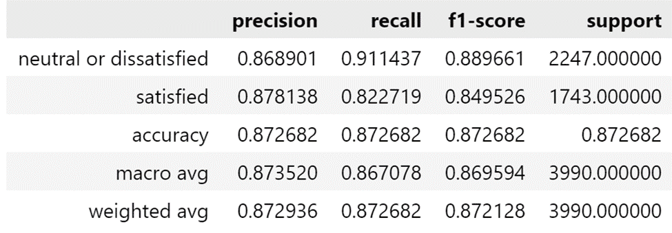
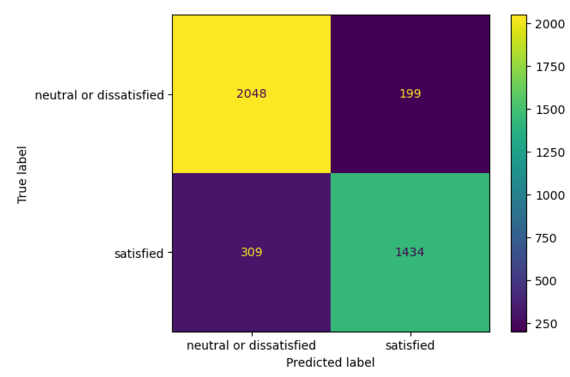
The Linear Kernel with an accuracy of 87% was by far the best performing kernel out of the 4.
Polynomial Kernel:
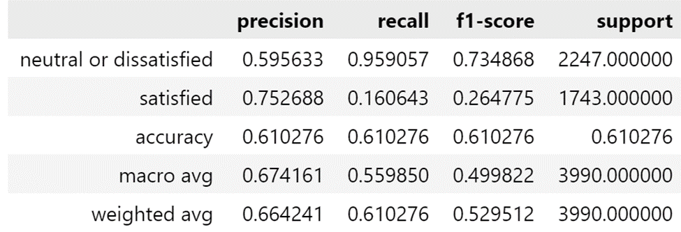
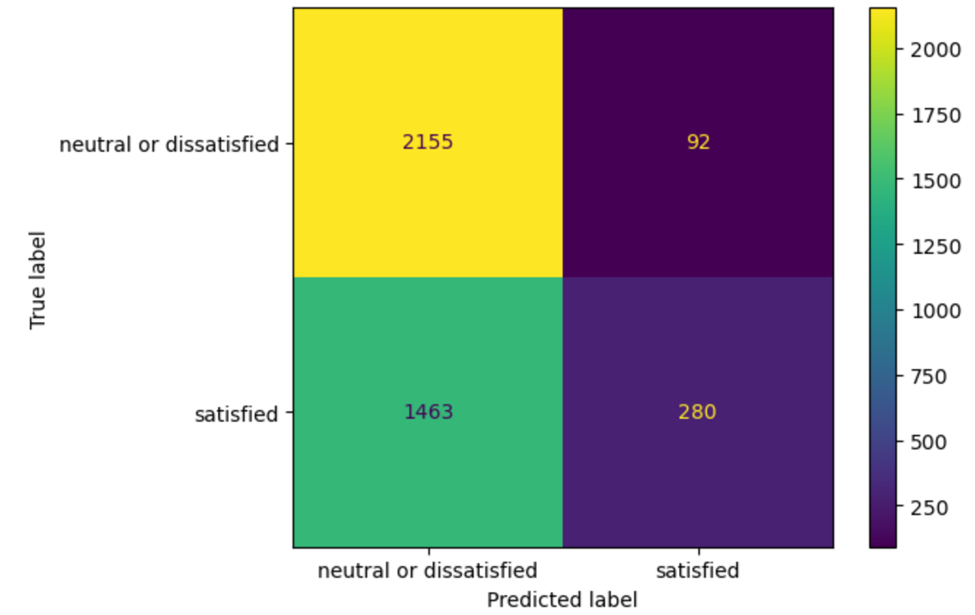
The polynomial kernel was second best with 61% accuracy, but suffered from mislabelling most observations as unsatisfied.
RBF Kernel:
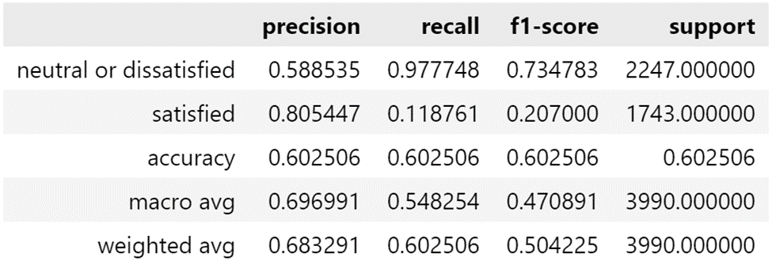
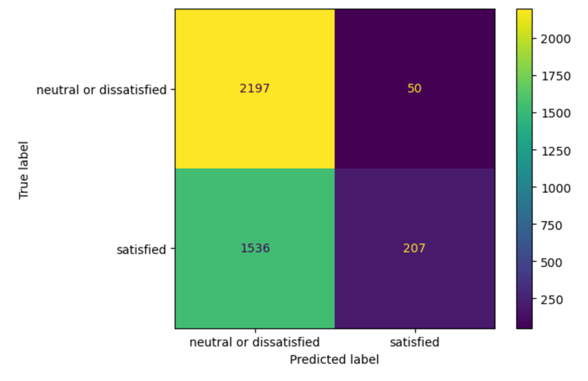
The RBF kernel had the same issue as the polynomial kernel where most observations were labeled as unsatisfied regardless of their true label.
Sigmoid Kernel:
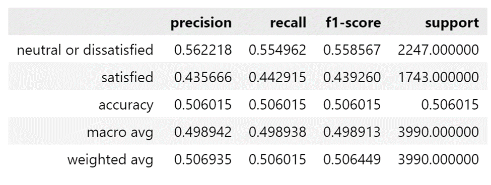
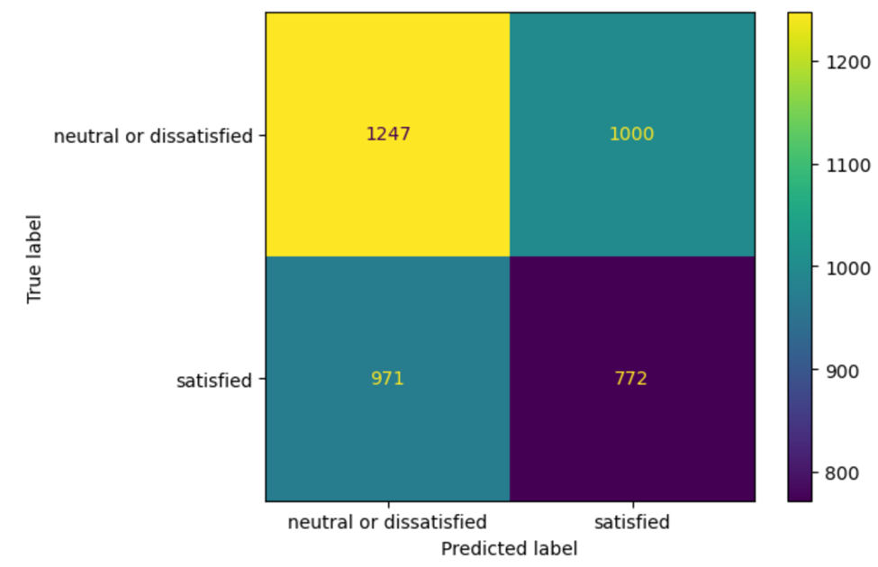
The sigmoid kernel had the worst accuracy at 50%.
Logistic Regression:
For the Logistic Regression model we used all 22 features in the data set to make predictions on whether the customer would be satisfied or dissatisfied. We split the data into a training and test set with an 80-20 split.
To initialize and train the logistic regression model, we used SkLearn’s linear_model package. The initial model we created was a model with SkLearn’s default hyperparameters (L2 regularization and lbfgs solver). After training the model on the training data set, we predicted labels for the test data and constructed a confusion matrix for the predictions.
As seen above, the true labels match the predicted labels in most cases. The model is more prone to assigning the “neutral or dissatisfied” label than the “satisfied” label with a recall score for “neutral or dissatisfied” of 0.91 while the recall score for “satisfied” is 0.83. The model predicted the proportion of satisfied customers to be 41.7%while the true proportion of satisfied customers in the data set is 43.4%. This model achieved an accuracy score of 87.39%.
We took the absolute value of the feature coefficients for each of the 22 features to determine the relative importance of each feature in predicting the label. For the initial model, we found that the most important features were type of travel, online boarding satisfaction, and customer type. The least important features were flight distance, gender of passenger, and satisfaction with food and drink service.
Grid Search for Best Parameters:
After creating an initial model with the default hyperparameters we attempted to create a better model by tuning the hyperparameters to find the ideal hyperparameters to use during the training process. To accomplish this we did a grid search of every combination of several of the hyperparameters to test which combination obtains the best result. The grid space we searched over included the solver (‘lbfgs’, ‘liblinear’, ‘newton-cholesky’, ‘sag’, and ‘newton-cg’), penalty (None, ‘l1’, and ‘l2’) and C (100, 10, 1, 0.1, and 0.01). The grid search tests each combination and returns the parameters that have resulted in the best accuracy score as well as the accuracy score that is achieved. The best parameters for this data set were sag solver, l2 penalty and a C value of 0.01 which achieved an accuracy of 87.45%.
Given the best hyperparameters from the grid search, we then trained a model with these hyperparameters. We used the same training and test split from the above model and trained the Logistic Regression model on the training data. After training the model, we generated label predictions for all of the test data and constructed the following confusion matrix.
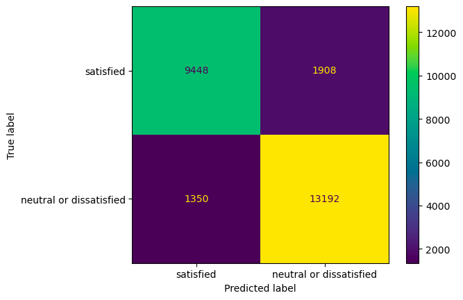
This tuned model performed very similarly to the model with default hyperparameters with the majority of predicted labels being correct. Again the model is more prone to labeling passengers as neutral or dissatisfied (Recall=0.91) rather than satisfied (Recall=0.83). This model achieved an accuracy score of 87.42%.
When looking at the absolute values of coefficients in the model, we see similar importance rankings for the factors as we did in the initial model.
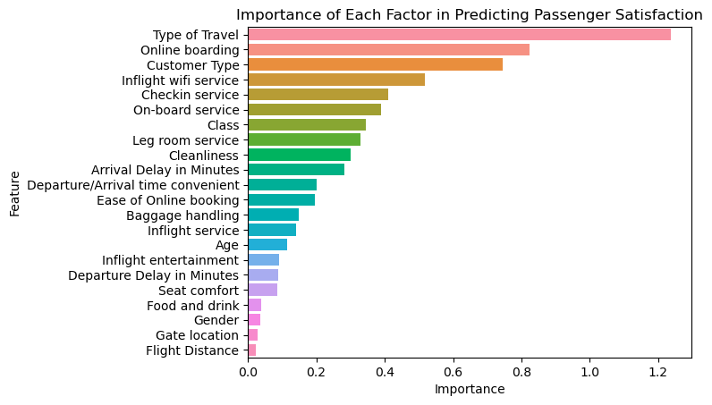
The most important factors for predicting passenger satisfaction were type of travel, online boarding satisfaction, and customer type. The least important factors for predicting passenger satisfaction were flight distance, gate location, and passenger gender.
Generalized Additive Models:
For the Generalized Additive Model, we conducted three different analyses using Generalized Additive Models. Each model has all continuous variables (the age of each reporting passenger, the distance each reporting passenger traveled, the arrival delay in minutes that each reporting passenger experienced, and the departure delays in minutes that each reporting passenger experienced) included as predictor variables against the response variable, satisfaction. Due to the departure delay in minutes not being as significant, we decided to only include that as part of the interaction term with every other predictor variable considered to see how the departure delay influences the observed relationship of the other variables.
Our first model includes the interaction between age and departure delays. Each variable is affected by a smoothing variable and is considered against satisfaction. Age yielded a p- value of less than 2e-16, flight distance yielded a p- value of less than 2e-16, arrival delay in minutes yielded a p-value of less than 2e-16, and our interaction term between age and departure delay yielded a p-value of 3.95e-06. Interestingly enough, each predictor variable considered in the model happened to significantly influence the chosen satisfaction level of reporting passengers.
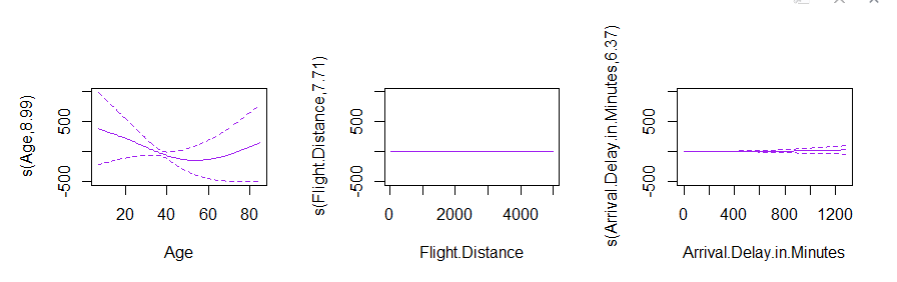
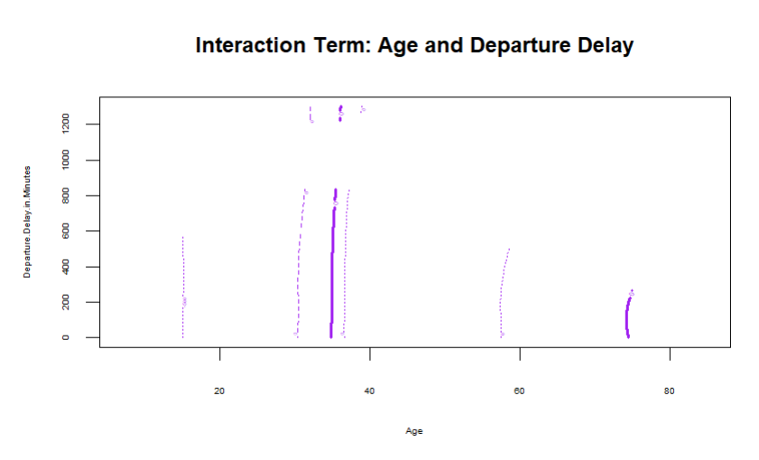
Our second model includes the interaction between flight distance and departure delays. Each variable is affected by a smoothing variable and is considered against satisfaction. Age yielded a p- value of less than 2e-16, flight distance yielded a p- value of less than 2e-16, arrival delay in minutes yielded a p-value of less than 2e-16, and our interaction term between flight distance and departure delay yielded a p-value of 0.404. Evidently, while most predictor variables considered in the model happened to significantly influence the chosen satisfaction level of reporting passengers, the interaction term does not significantly affect satisfaction.
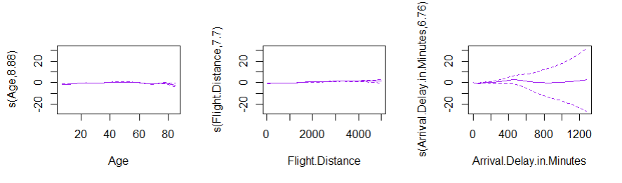
Our third model includes the interaction between arrival and departure delays. Each variable is affected by a smoothing variable and is considered against satisfaction. Age yielded a p- value of less than 2e-16, flight distance yielded a p- value of less than 2e-16, arrival delay in minutes yielded a p-value of 0.651, and our interaction term between arrival and departure delays yielded a p-value of less than 2e-16. Unlike the previous models, this model shows two individual predictor variables and the interaction term are significantly affecting satisfaction choice. This change in significance for arrival delay suggests that its influence on the choice in satisfaction significantly depends on the presence and length of the departure delay.
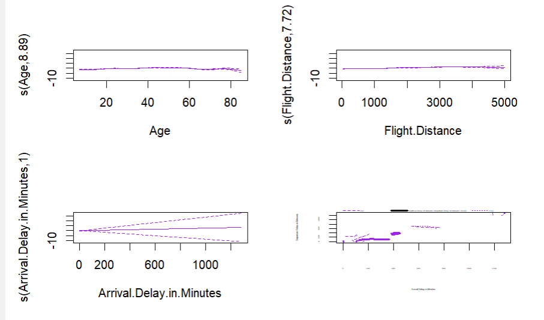
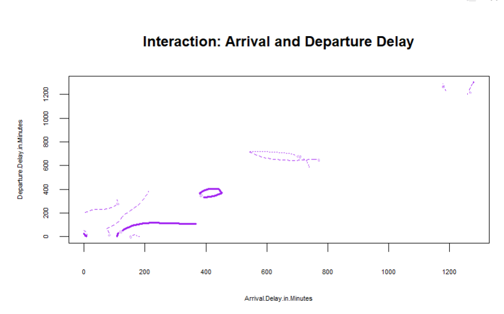
Out of curiosity, we decided to look at the predictions of the reporting passengers in our test subset being satisfied. After running “predict.gam”, we compared the actual reports of satisfaction to our testing subset- based predictions. Our prediction produced a Receiver Operating Characteristic (ROC) curve with an associated Area Under the Curve (AUC) value of 0.7328. Also, we looked deeper into the relationship between the arrival and departure times and plotted the probability of a reporting passenger being satisfied below.
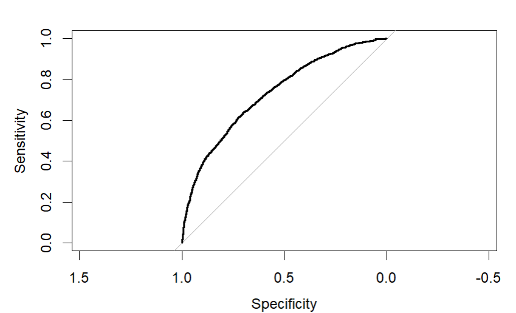
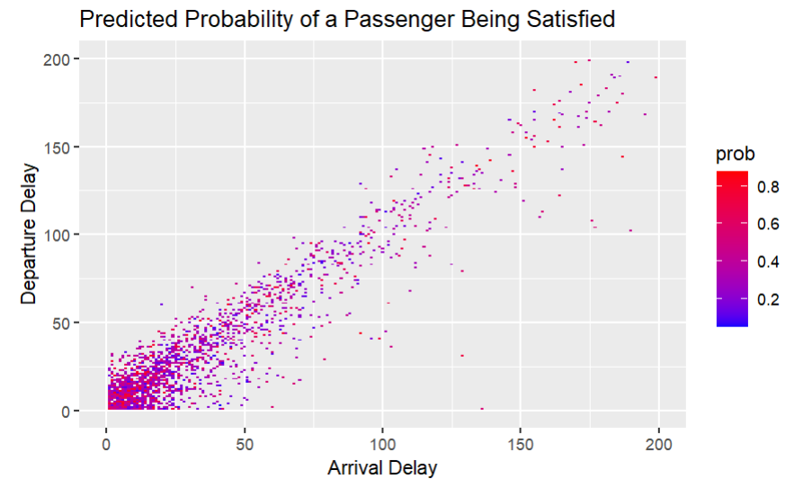